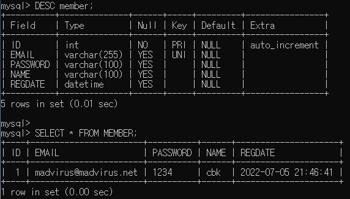

<meta charset="utf-8">
<html lang="ko">
<head>
    <link rel="stylesheet" type="text/css" href="./../style.css" />
    <title>Ch8. Spring의 JdbpcTemplate을 이용한 쿼리 실행</title>
</head>
<body id="tt-body-page" class="">
<div id="wrap" class="wrap-right">
    <div id="container">
        <main class="main ">
            <div class="area-main">
                <div class="area-view">
                    <div class="article-header">
                        <div class="inner-article-header">
                            <div class="box-meta">
                                <h2 class="title-article">Ch8. Spring의 JdbpcTemplate을 이용한 쿼리 실행</h2>
                                <div class="box-info">
                                    <p class="category">Web</p>
                                    <p class="date">2022-07-07 21:57:36</p>
                                </div>
                            </div>
                        </div>
                    </div>
                    <hr>
                    <div class="article-view">
                        <div class="contents_style">
                            <p data-ke-size="size16">&nbsp;</p>
<h2 data-ke-size="size26"><b>MySql에서 DB 테이블 생성</b></h2>
<p data-ke-size="size16">예제 작성을 위한 테이블 생성 및 데이터 생성.</p>
<p><figure class="imageblock alignLeft" >
    <span data-lightbox="lightbox">
        
    </span>
    <figcaption>MEMBER 테이블 생성, 데이터 생성 완료</figcaption>
</figure></p>
<p data-ke-size="size16">&nbsp;</p>
<p data-ke-size="size16">&nbsp;</p>
<h2 data-ke-size="size26"><b>JdbcTemplate 생성</b></h2>
<p data-ke-size="size16">JdbcTemplate 객체는 DataSource를 생성자에 받아서 생성된다.</p>
<p data-ke-size="size16">DataSource 는 빈 객체로 등록했으니 받아서 만들면 된다 .</p>
<p data-ke-size="size16">&nbsp;</p>
<p data-ke-size="size16"><b>AppCtx.class (설정 클래스)</b></p>
<pre class="kotlin"><code>package config;

import org.apache.tomcat.jdbc.pool.DataSource;
import org.springframework.context.annotation.Bean;
import org.springframework.context.annotation.Configuration;
import spring.MemberDao;

@Configuration
public class AppCtx
{
    @Bean(destroyMethod = "close") // close 메소드는 커넥션 풀에 보관된 Connection을 닫는다
    public DataSource dataSource()
    {
        DataSource ds = new DataSource();
        ds.setDriverClassName("com.mysql.jdbc.Driver"); // Driver 클래스 지정
        ds.setUrl("jdbc:mysql://localhost/spring5fs?characterEncoding=utf8");
        ds.setUsername("spring5");
        ds.setPassword("spring5");
        ds.setInitialSize(2); // 커넥션풀을 2개 만들어 놓는다
        ds.setMaxActive(10); // 활성 상태 가능한 최대 커넥션 개수 10
        // 10초 주기로 유휴 커넥션이 유효한지 여부 검사, 최소 유휴 시간 3분으로 지정
        ds.setTestWhileIdle(true); // 유휴 커넥션 검사 true
        ds.setMinEvictableIdleTimeMillis(1000 * 60 * 3); // 최소 유휴 시간 3분 설정
        ds.setTimeBetweenEvictionRunsMillis(10 * 1000); // 10초 주기로
        return ds;
    }
    
    @Bean
    public MemberDao memberDao()
    {
        // dataSource 빈 객체를 받는다 
        return new MemberDao(dataSource());
    }
}
</code></pre>
<p data-ke-size="size16">&nbsp;</p>
<p data-ke-size="size16"><b>DB 연동 기능을 구현할 MemberDao 클래스</b></p>
<pre class="arduino"><code>// Member DB
public class MemberDao
{
    private static long nextId = 0;
    private Map&lt;String, Member&gt; map = new HashMap&lt;&gt;();

    private JdbcTemplate jdbcTemplate;

    public MemberDao(DataSource dataSource)
    {
        this.jdbcTemplate = new JdbcTemplate(dataSource);
    }</code></pre>
<p data-ke-size="size16">&nbsp;</p>
<p data-ke-size="size16">&nbsp;</p>
<h2 data-ke-size="size26"><b>JdbcTemplate을 이용한 조회 쿼리 실행&nbsp;</b></h2>
<p data-ke-size="size16">&nbsp;</p>
<p data-ke-size="size16">JdbcTemplate 클래스는 SELECT 쿼리 실행을 위한<b> query() 메소드</b>가 있다.</p>
<p data-ke-size="size16">&nbsp;</p>
<pre class="dart"><code>List&lt;T&gt; query(String sql, RowMapper&lt;T&gt; rowMapper, Object... args)</code></pre>
<p data-ke-size="size16">sql 문을 String으로 전달한다.</p>
<p data-ke-size="size16">전달 받은 쿼리를 실행하고 얻은 ResultSet의 결과를 <b>RowMapper가 자바 객체로 변환한다.</b></p>
<p data-ke-size="size16"><b>args</b>는 sql의 파라미터가 인덱스 기반 파라미터를 갖는 쿼리이면 인덱스를 지정한다.&nbsp;</p>
<p data-ke-size="size16">&nbsp;</p>
<p data-ke-size="size16">query() 메소드는 <b>쿼리 실행 결과가 존재하지 않으면 길이 0인 List를 리턴</b>한다.&nbsp;</p>
<p data-ke-size="size16">&nbsp;</p>
<p data-ke-size="size16"><b>MemberDao 클래스</b></p>
<pre class="aspectj"><code>public Member selectByEmail(String email)
{
    // List&lt;T&gt; query(String sql, RowMapper&lt;T&gt; rowMapper, Object... args)
    List&lt;Member&gt; results = jdbcTemplate.query(
            "select * from MEMBER where EMAIL = ?",
            // 임의 클래스를 이용해 RowMapper 객체 전달
            new RowMapper&lt;Member&gt;()
            {
                @Override
                public Member mapRow(ResultSet rs, int rowNum) throws SQLException
                {
                    Member member = new Member(
                            rs.getString("EMAIL"),
                            rs.getString("PASSWORD"),
                            rs.getString("NAME"),
                            rs.getTimestamp("REGDATE").toLocalDateTime());
                    member.setId(rs.getLong("ID"));
                    return member;
                }
            }
            , email
    );

    return results.isEmpty() ? null : results.get(0);
}</code></pre>
<p data-ke-size="size16">&nbsp;</p>
<p data-ke-size="size16">query() 메소드에 String으로 된 쿼리문, 임의 클래스 RowMapper 객체, email을 전달해 결과를 List로 받고있다.</p>
<p data-ke-size="size16">&nbsp;</p>
<p data-ke-size="size16">임의 클래스 <b>RowMapper</b>를 보면 알겠지만, RowMapper은 쿼리의 결과를 자바 객체로 변환해서 반환한다.&nbsp;</p>
<p data-ke-size="size16">&nbsp;</p>
<p data-ke-size="size16">&nbsp;</p>
<p data-ke-size="size16">&nbsp;</p>
<hr contenteditable="false" data-ke-type="horizontalRule" data-ke-style="style3" />
<h2 data-ke-size="size26"><b>queryForObject() 메소드&nbsp;</b></h2>
<p data-ke-size="size16"><b>queryForObject</b> 메소드는 쿼리 실행 결과가 행이 한 개인 경우 사용한다.&nbsp;</p>
<p data-ke-size="size16">결과 행이 없어도, 2개 이상이어도 익셉션이 발생한다.&nbsp;</p>
<p data-ke-size="size16">예를들어 쿼리문이 "select count(*) from MEMBER" 이면 MEMBER 테이블 전체 행 갯수를 가져오는데, 실행 결과가 한개의 행이다.&nbsp;</p>
<p data-ke-size="size16">&nbsp;</p>
<pre class="reasonml"><code>queryForObject(String sql, Class&lt;T&gt; requiredType)</code></pre>
<pre class="fortran"><code>public int count()
{
    // queryForObject(String sql, Class&lt;T&gt; requiredType)
    // 쿼리 실행 결과가 한 행일때 사용 가능
    Integer count = jdbcTemplate.queryForObject("select count(*) from MEMBER", Integer.class);
    return count;
}</code></pre>
<p data-ke-size="size16">&nbsp;</p>
<p data-ke-size="size16">queryForObject 메소드도 query 메소드와 마찬가지로 인덱스 파라미터 (물음표)를 사용할수 있고, 사용할시 queryForObject의 3번째 메소드로 전달한다. (query와 마찬가지로 가변인자)&nbsp;</p>
<p data-ke-size="size16">&nbsp;</p>
<p data-ke-size="size16">아래 코드는 <b>queryForObject 메소드로 MEMBER 테이블에서 ID가 100인 컬럼을 가져오는 코드다.</b></p>
<pre class="aspectj"><code>Member member = jdbcTemplate.queryForObject
        (
        "select * from MEMBER where ID = ?", // MEMBER 테이블에서 특정 ID인 컬럼 가져옴
        new RowMapper&lt;Member&gt;()
        {
            @Override
            public Member mapRow(ResultSet rs, int rowNum) throws SQLException
            {
                Member member = new Member(
                        rs.getString("EMAIL"),
                        rs.getString("PASSWORD"),
                        rs.getString("NAME"),
                        rs.getTimestamp("REGDATE").toLocalDateTime());
                        member.setId(rs.getLong("ID"));
                return member;
            }
        }
        , 100 // ID = 100인 컬럼
        );</code></pre>
<p data-ke-size="size16">query() 메소드와 마찬가지로 실행 결과 컬럼이 두개 이상이면 RowMapper를 두번째 파라미터로 전달해 결과를 받을수 있다.&nbsp;</p>
<p data-ke-size="size16">&nbsp;</p>
<hr contenteditable="false" data-ke-type="horizontalRule" data-ke-style="style3" />
<h2 data-ke-size="size26"><b>query와 queryForObject 메소드의 흐름</b>&nbsp;</h2>
<p data-ke-size="size16">두 메소드의 차이는 쿼리 결과 행이 1개 인지, 2개 이다.&nbsp;</p>
<p data-ke-size="size16">query()는 List를 반환받고, queryForObject는 파라미터로 받은 타입을 리턴한다.&nbsp;</p>
<p data-ke-size="size16">둘이 흐름은 동일하다.</p>
<p data-ke-size="size16">&nbsp;</p>
<p data-ke-size="size16">1. 첫번째 파라미터로 쿼리문을 전달한다. 쿼리문에는 인덱스 파라미터가 있을수 있고 있다면 가변인자인 세번째 파라미터로 전달한다.</p>
<p data-ke-size="size16">&nbsp;</p>
<p data-ke-size="size16">2. 쿼리의 결과를 받기위해 두번째 파라미터로 RowMapper를 전달한다.&nbsp;</p>
<p data-ke-size="size16">&nbsp; &nbsp;RowMapper는 임의 클래스, 람다 혹은 아예 클래스를 구현해 전달할수 있다.</p>
<p data-ke-size="size16">&nbsp; &nbsp;</p>
<p data-ke-size="size16">&nbsp;</p>
<hr contenteditable="false" data-ke-type="horizontalRule" data-ke-style="style3" />
<p data-ke-size="size16">마지막으로 query, queryForObject 메소드 모두 jdbcTemplate에 정의되어 있고,</p>
<p data-ke-size="size16">jdbcTemplate는 디비 설정 등 정보가 담긴 DataSource 빈 객체를 받아 생성된다!</p>
<p data-ke-size="size16">&nbsp;</p>
<p data-ke-size="size16">&nbsp;</p>
<p data-ke-size="size16">&nbsp; &nbsp;</p>
<p data-ke-size="size16"><span style="color: #555555;">출처 : 스프링5 프로그래밍 입문 (최범균 저)&nbsp;</span></p>
                        </div>
                        <br/>
                        <div class="tags">
                            #db #string 
                        </div>
                    </div>
                </div>
            </div>
        </main>
    </div>
</div>
</body>
</html>
